The Early Warning, Alert and Response System (EWARS) Stand-alone application (app) facilitates mobile reporting in environments that are offline or lack access to reliable internet connections. It is set up on a dedicated laptop or desktop (with Windows operating system), ideally situated at a central surveillance office of the concerned area. The app helps capture the data from EWARS Mobile users in such environments and then synchronizes (syncs) it with WHO EWARS. In such instances, EWARS Stand-alone acts as the receiver and EWARS Mobile acts as a sender. EWARS Stand-alone is similar to EWARS Web in terms of the interface, but it is equipped with additional data collection and synchronization features. Through this, field data can be collected and reported seamlessly in difficult environments, facilitating uninterrupted analysis and monitoring/tracking.
EWARS Stand-alone functions as an intermediary medium, facilitating reporting between EWARS Mobile and WHO EWARS in environments that are offline or that lack access to reliable internet connections. Fig. 25.1 illustrates the process of data capture and submission to WHO EWARS via EWARS Stand-alone in such environments . Refer to Chapter 1. Overview of EWARS in a box for more scenarios.
Fig. 25.1. Data capture and submission using EWARS Stand-alone
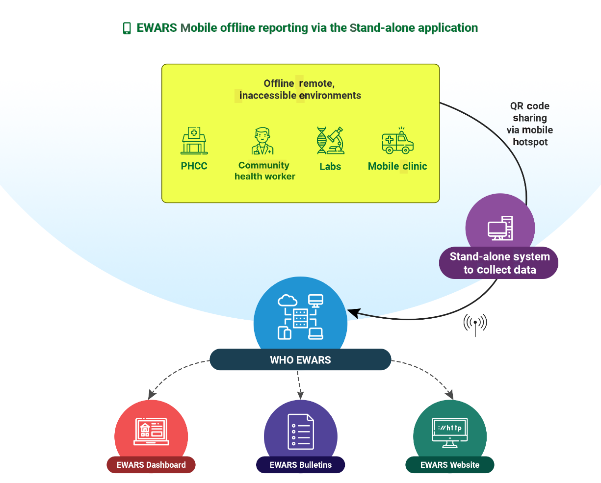
EWARS Stand-alone allows Geographical Administrators and Account Administrators to work while they are not connected to the internet.
This a
pp will not replace the interactive environment that normal EWARS provides. This chapter is written assuming you have an EWARS Country account that runs using reliable internet in other parts of the country. EWARS Stand-alone is used only in localized and remote areas with unreliable internet connectivity.
The topics below set out how to set up EWARS Stand-alone. After the initial setup, it is mandatory to sync your account with WHO EWARS. During the synchronization, your account data and configurations are copied to the EWARS Stand-alone app storage, facilitating use of the app while you are offline.
25.1 Setting up EWARS Stand-alone
The setup process involves procuring a laptop or desktop, downloading the app and installing it on the machine.
Step 1. You need a dedicated laptop or desktop to run the EWARS Stand-alone app. Ideally, this should be a machine at a central surveillance office in the area where you want to set up the EWARS Stand-alone operation.
Minimum hardware requirements to set up EWARS Stand-alone are:
a processor operating at 2.0 GHz or more
8 GB or more RAM
40 GB or more available hard disk space
a Windows 8 32-bit/64-bit or more operating system
3G/4G network coverage (the app can work in 2G but 3G/4G is recommended for smooth running).
Step 2. Download the EWARS Stand-alone app onto your computer.
Note: the following initial steps of installation need to be completed in an environment with an internet connection.
Type the link to access the setup file of the EWARS Stand-alone app into an internet browser:
When you click on the link, the setup file should begin to download automatically. You can view the progress of the download at the bottom right-hand corner of the browser:
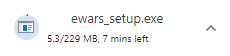
Text Description automatically generated with medium confidence
After the download is complete, the ewars_setup.exe file appears in the progress bar:
Step 3. Install the EWARS Stand-alone app on your computer.
Double-click on the downloaded file. A dialogue box appears saying “Windows protected your PC”, as shown below:
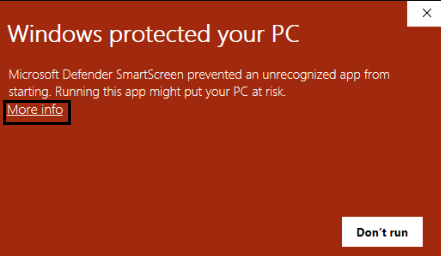
Graphical user interface, application Description automatically generated
Click on More info, and the screen below appears:
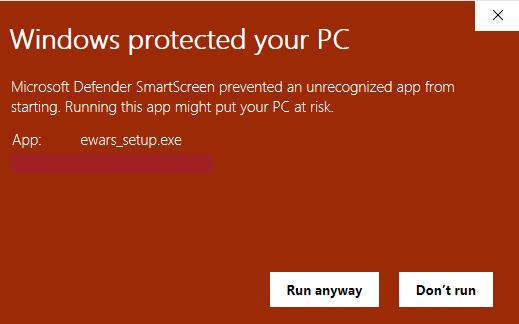
Graphical user interface, text, application Description automatically generated
Click on Run anyway, and the app starts installation. Check the progress bar of the installation process:
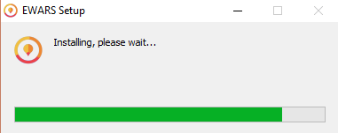
Graphical user interface Description automatically generated with medium confidence
After installation, the desktop app opens automatically, as shown below:
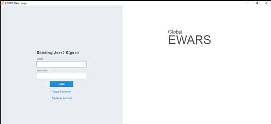
Graphical user interface, application Description automatically generated
You now have a working version of EWARS Stand-alone installed on your machine.
25.2 Syncing your account for the first time
Synchronization of an account is the process of fetching data such as forms, alarms, users and so on from WHO EWARS to your EWARS Stand-alone account and of sending submitted reports and triggered alerts from your EWARS Stand-alone app to the WHO EWARS server.
The sync feature is available only for users using EWARS Stand-alone and EWARS Mobile apps.
After installation, it is important to sync your account before using the EWARS Stand-alone account. When you sync your account for the first time, all the forms, alarms, users, dashboards, bulletins and similar of your account on the WHO EWARS server also become available in the EWARS Stand-alone app.
You can sync your account using one of the following two options (see Fig. 25.2).
You can sync directly with WHO EWARS. This requires a reliable internet connection.
You can sync with the nearest hub. This does not require an internet connection. The nearest hub is another EWARS Stand-alone account connected to the same network.
Fig 25.2. Syncing your account with WHO EWARS or the nearest hub
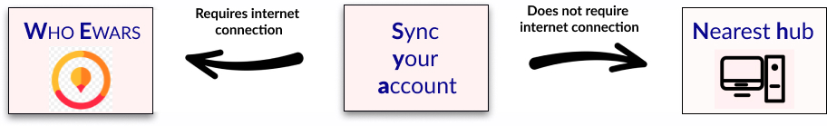
These options are detailed in the following sections.
25.2.1 Syncing with WHO EWARS
WHO EWARS is a WHO-controlled server accessible via the internet. To sync your data with it, you require an active data connection.
Note: if you are already a registered user, use your EWARS credentials. If you are not a registered user, you need to create an account or request an Account Administrator to create one for you.
Before you sync your account, ensure that your laptop/desktop is connected to the internet.
Click on the EWARS icon on your desktop, and the screen below appears:
Graphical user interface, application Description automatically generated
Enter your EWARS account details to sign in – i.e. your Email (e.g. “countryxadmin@gmail.com”) > enter your Password (e.g. “afv52@127”) > click on Login. The Sync Account dialogue box appears, as shown below:
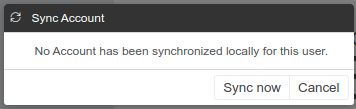
Graphical user interface, text, application Description automatically generated
Click on Sync now, and the following screen appears:
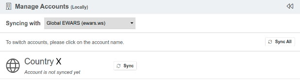
Select Global EWARS (ewars.ws) from the Syncing with drop-down menu > click on
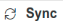
in your account (Country X). The synchronization process starts, and the progress bar below appears:
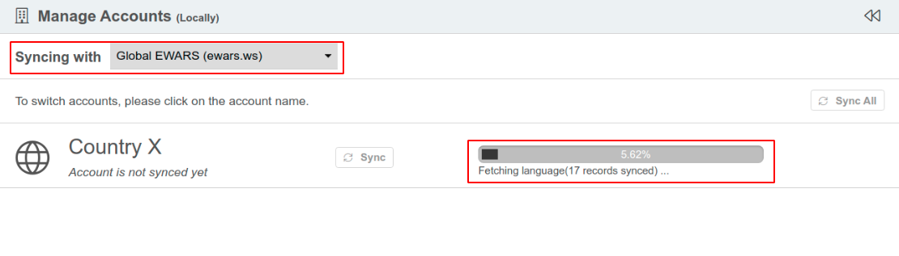
Graphical user interface, application Description automatically generated
Note: if the internet connection is lost during the synchronization process, a notification appears, as shown below:
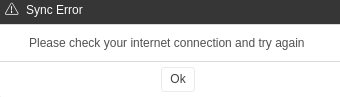
Once the internet connection is re-established, you need to sync again.
Once the synchronization process is completed, a notification appears, and the account is synced. The country name appears in blue with a last synced on message, as shown below:
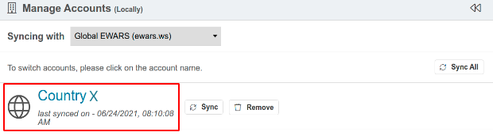
Click on the name of the account (e.g. Country X). You will be logged in to your EWARS Stand-alone account and should be able to view a screen like the one below:
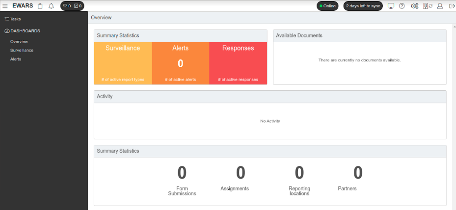
Treemap chart Description automatically generated with medium confidence
25.2.2 Syncing with the nearest hub
A hub is another EWARS Stand-alone account. Your nearest hub may be an account managing data for the nearest province or district. Neighbouring hubs can sync data if the two Stand-alone accounts (i.e. laptops) are connected to the same Wi-Fi or the same local area network.
To sync your EWARS Stand-alone app with the nearest hub, follow the steps below.
Step 1. Obtain the internet protocol (IP) address of the nearest hub.
Start the EWARS Stand-alone app by clicking on the EWARS icon on the desktop of the nearest hub.
Click on the
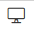
icon on the dashboard screen and the My IP Addresses dialogue box below appears:
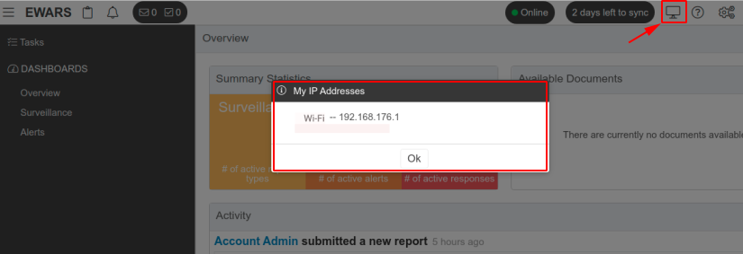
Graphical user interface, text, application Description automatically generated
Note down the IP address in the screenshot as it will be needed for syncing.
Note: an IP address is the unique number given to your computer when it is connected to a network. This can change each time you reconnect, so you should not omit this step of checking your IP address when syncing, to ensure that you have the correct up-to-date address.
Step 2. Sync your account.
Click on the EWARS icon on your desktop. The screen below appears:
Graphical user interface, application Description automatically generated
Enter your Email > enter your Password > click on Login. The Sync Account dialogue box below appears:
Graphical user interface, text, application Description automatically generated
Click on Sync now, and your accounts are listed, as shown below:
Select Nearest Hub from the Syncing with drop-down menu, as in the following screenshot:
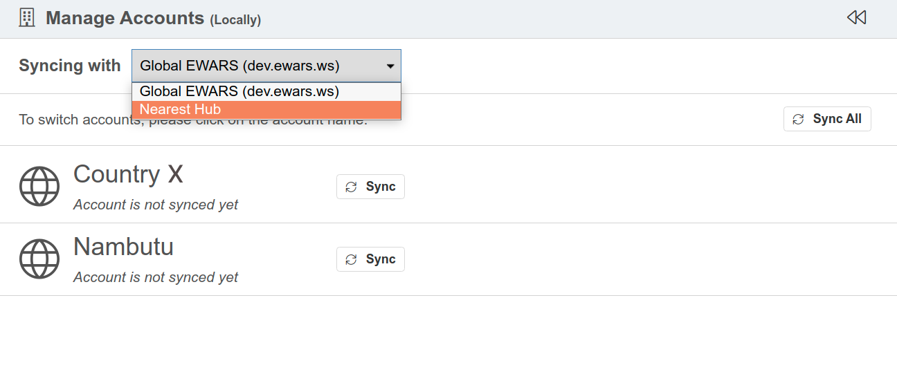
Enter the IP address of the nearest hub in the textbox, as shown below:
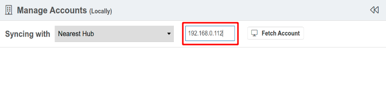
Graphical user interface, application Description automatically generated
Click on
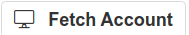
and the following screen appears:
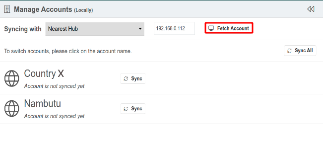
All the accounts available in the nearest hub are listed. You can now sync your account.
Click on next to Country X, and the screen below appears:
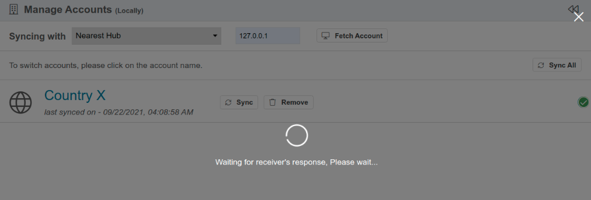
Graphical user interface, text, application, email Description automatically generated
Once you click on , a confirmation request is sent to the nearest hub.
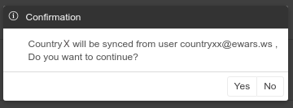
If confirmation of the request is not received within 15 seconds, you will have to repeat the request and start the process again from the beginning.
Click on Yes and the account is synced with the nearest hub. The synchronization process starts, and a progress bar appears, as shown below:
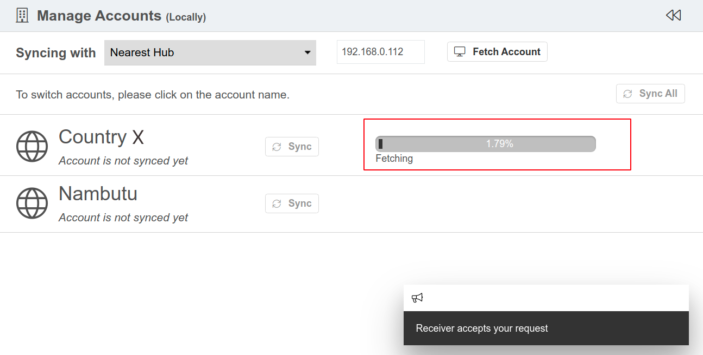
Once the synchronization process is complete, a notification appears, confirming that the account is synced with the nearest hub.
25.3 Sending reports from one EWARS Mobile account to another
After you have synced your EWARS Stand-alone account successfully, the next step is to receive reports from EWARS Mobile users. This data transfer does not require reliable internet connectivity: it can take place using a local hotspot created by the mobile phone, and the connection is established with the help of a quick response (QR) code.
In a context with no internet connectivity, the mobile phone may not even have a SIM card, but you should be able to share data from an EWARS Mobile to an EWARS Stand-alone account. The most convenient way to share EWARS Mobile data is to sync your data with another EWARS Mobile account, which acts as a data receiver. In field settings, a surveillance officer may travel to remote reporting centres with an EWARS Mobile account, where he/she can sync data from reporting centres to EWARS mobile. On return to the surveillance hub, the surveillance officer can sync the collected data with the Stand-alone account.
EWARS Mobile data transfer happens via a hotspot. For the hotspot to work, all equipment should be in close proximity to each other and on the same local area network.
Note: your mobile phone should be equipped with a camera in order to scan the QR code.
Mobile
users can report and save data (e.g. in a weekly forms) in EWARS Mobile and take the mobile phone to sync with the local hub at the surveillance office on a specified day of the week. Syncing via a hotspot takes only a few seconds. Alternatively, they can sync data with another EWARS Mobile account at the health facility. The second mobile phone will ultimately sync the data with the local hub.
The steps below set out the process of submitting reports between EWARS Mobile accounts from both the sender perspective and the receiver perspective.
At the sender’s end, follow the steps below.
Tap on the sync icon at the top right-hand corner of the home screen on your EWARS Mobile app.
Tap on .
Tap on . A hotspot is created on your mobile phone and a QR code is generated (Fig. 25.2).
Fig. 25.2. Sending reports from one EWARS Mobile account to another
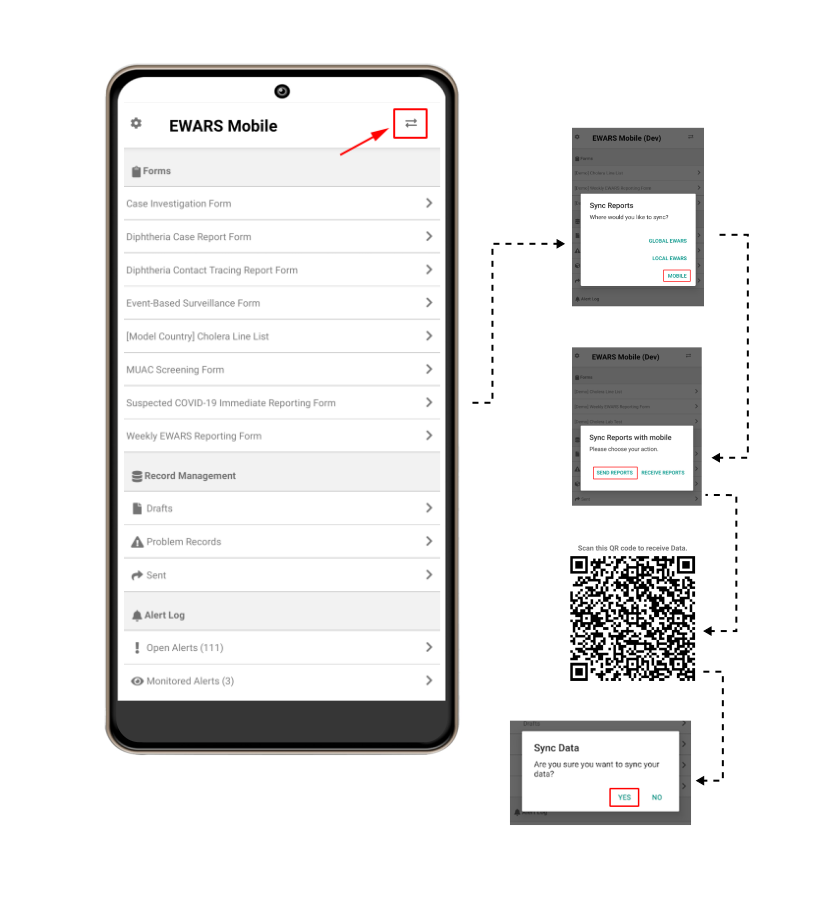
At the receiver’s end, follow the steps below.
Tap on the sync icon at the top right-hand corner of the home screen on your EWARS Mobile app.
Tap on .
Tap on while your Wi-Fi service is enabled, and a QR code scanner is opened to scan the code.
Point the device’s camera at the QR code so that it is clearly visible within your mobile phone’s screen. The phone automatically scans the code (Fig. 25.3).
Fig. 25.3. Receiving reports in one EWARS Mobile account from another
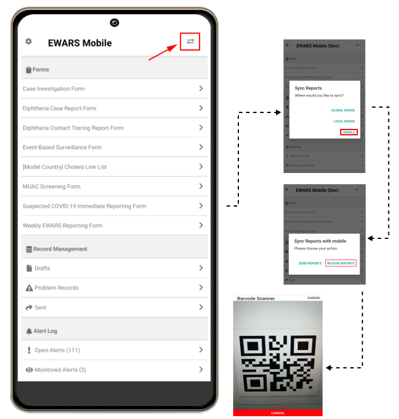
Once the scan is successful, the sender gets a notification confirming the data transfer. The sender confirms, and the data are transferred. The receiver can view the submitted report(s) in the queue.
25.4 Sending reports from EWARS Mobile to EWARS Stand-alone
This feature enables Reporting Users to share reports from EWARS Mobile to the EWARS Stand-alone app without internet connectivity. In this activity, EWARS Stand-alone acts as a receiver and EWARS Mobile acts as a sender. The data transfer takes place using a local hotspot created by the mobile phone, and the connection is established with the help of QR code.
Note: your laptop/desktop needs to be equipped with a camera in order to scan the QR code.
The steps below set out the process of submitting reports, from both the EWARS Stand-alone (receiver) perspective and the EWARS Mobile (sender) perspective.
Step 1. Initiate the process of receiving reports on the EWARS Stand-alone app.
Start the EWARS Stand-alone app by clicking on the EWARS icon on your desktop. The screen below appears:
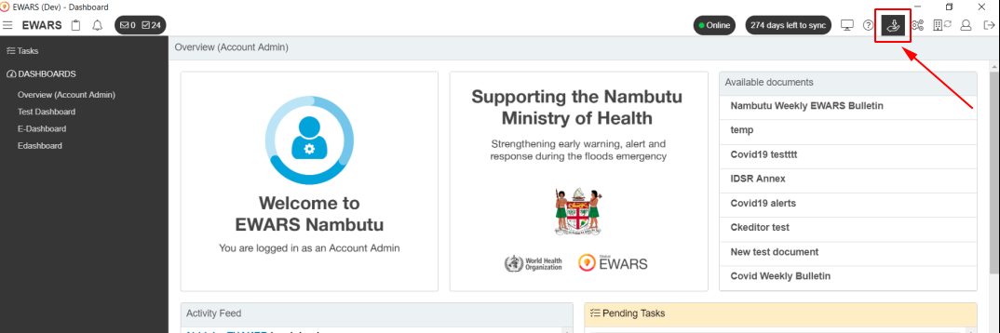
Graphical user interface, application, Word Description automatically generated
Click on the receive reports icon highlighted in the screenshot above. The QR code scanner screen below appears:
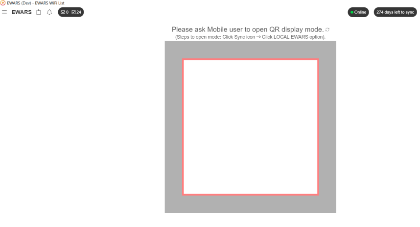
A picture containing shape Description automatically generated
The QR code reader/scanner is now online on EWARS Stand-alone.
Step 2. Send reports from the EWARS Mobile app.
Start the EWARS Mobile app by tapping on the EWARS icon on the home screen of your Mobile phone.
Tap on the sync icon visible at the top right-hand corner of the home screen.
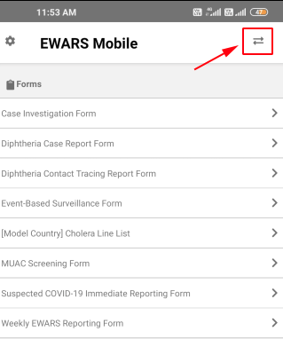
Table Description automatically generated
The sync options screen appears, as shown below:
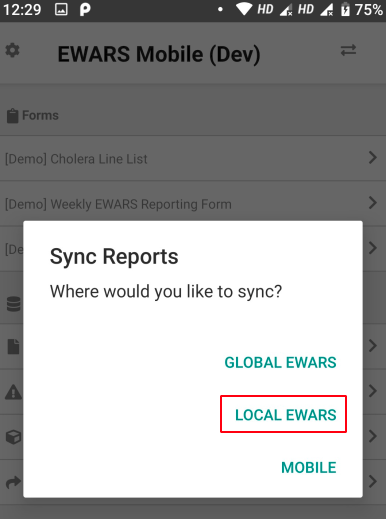
Graphical user interface, text, application, chat or text message Description automatically generated
Tap on , and the Local EWARS selection screen appears. Tap on , as shown below:
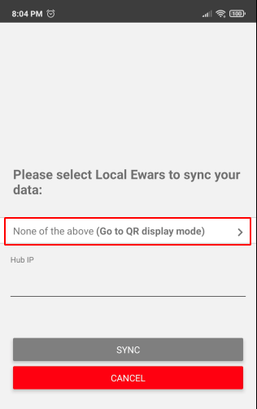
Graphical user interface, text, application Description automatically generated
A screen saying Creating hotspot appears. Stay on the screen for a few seconds and the EWARS Mobile app starts a mobile hotspot and generates a QR code, as shown below:
Qr code Description automatically generated
This QR code generated on EWARS Mobile needs to be scanned using a camera available on the laptop or desktop with the EWARS Stand-alone app installed.
Step 3. Scan the QR code via the EWARS Stand-alone app.
Hold the mobile phone so that the QR code is clearly visible within the camera on your laptop or desktop, as shown below:
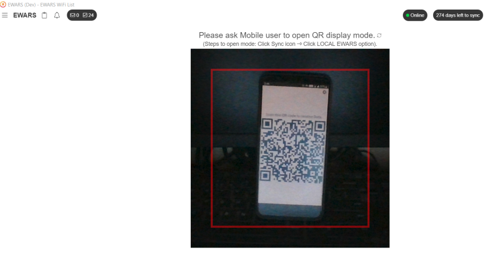
Qr code Description automatically generated
Once the QR code is scanned successfully, EWARS Stand-alone connects to an AndroidShare mobile hotspot that is created automatically by the system, as shown in the image below:
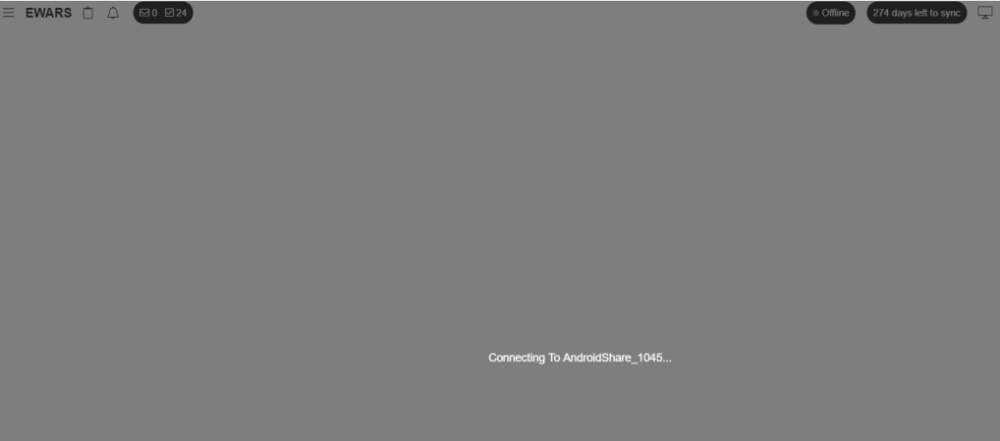
A screenshot of a computer Description automatically generated with medium confidence
Once connected, the confirmation notification to sync data appears on EWARS Mobile. Tap on Yes, as shown below:
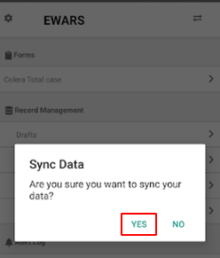
Graphical user interface, text, application Description automatically generated
The synchronization process starts, and a notification appears on the EWARS Stand-alone app. Once the account is synced, the following notification appears:
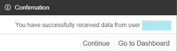
Graphical user interface, application Description automatically generated
All the collected reporting data are available under the Report manager menu in EWARS Stand-alone.
Once an internet connection is available, you can submit all the data from EWARS Stand-alone to the WHO EWARS server. The following topic addresses this in greater detail.
25.5 Subsequent syncing
Once the reports are received from EWARS Mobile, the next step is to submit the data from EWARS Stand-alone to WHO EWARS. This is achieved using subsequent syncing. Alongside submitting the data, subsequent syncing ensures that all the newly configured items (e.g. forms, bulletins and dashboards) on WHO EWARS are now also available in your EWARS Stand-alone app.
It is
recommended that you sync your EWARS Stand-alone account with the WHO EWARS server from time to time, to send and receive the latest data generated in both apps.
To sync your account, follow the steps below.
Start the EWARS Stand-alone app by clicking on the EWARS icon on your desktop.
Click on the sync
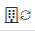
icon at the top right-hand corner of your dashboard screen, and the screen below appears:
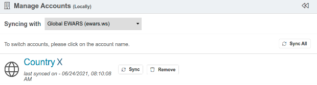
Select an appropriate option from the Syncing with drop-down menu. The options are:
Global EWARS (dev.ewars.ws)
Nearest Hub.
For more information about these options, refer to topic 25.2 Synchronizing your account for the first time.
Once the synchronization process is complete, a notification appears, and the account is synced. The country name appears in blue, and the last synced on message is shown below it.
When syncing the account, conflicts might arise if parallel edits are made in the same report across local installations. In such a scenario, you need to resolve the conflicts in order to sync successfully with the WHO EWARS server.
The following topic provides detailed information about identifying and resolving such conflicts.
25.5.1 Identifying conflicts
A conflict can occur when WHO EWARS has received an updated copy of a report and a user attempts to update an earlier version of the same report.
For demonstration purposes, this guide uses the following example of how a conflict might arise.
Example 1. Let’s assume that two users – User A and User B – are assigned to submit using Report 1.
User A submits Report 1, as shown below:
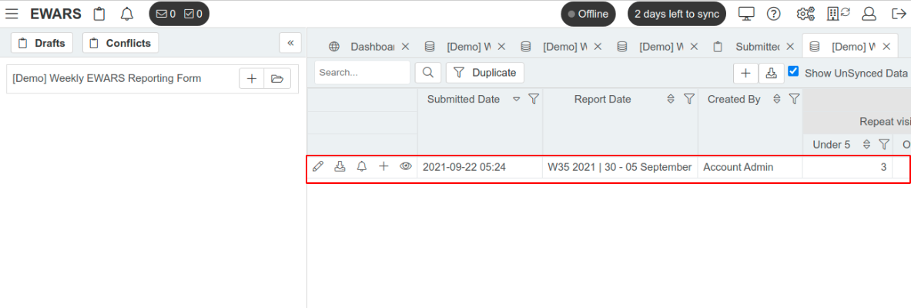
Graphical user interface, text, application Description automatically generated
User A syncs with the WHO EWARS server (refer to topic 25.2.1 Syncing with WHO EWARS for more information).
User B syncs with the WHO EWARS server, and Report 1 is now available in the EWARS Stand-alone app, as shown below:
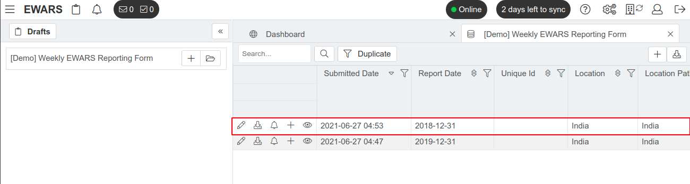
Graphical user interface, text, application Description automatically generated
User A and User B both amend Report 1 from their EWARS Stand-alone apps simultaneously.
User B syncs the amended Report 1 with the WHO EWARS server. Once the synchronization is performed, the amended report is available in WHO EWARS.
When User A attempts to sync their amended Report 1 with the WHO EWARS server afterwards, a conflict is reported in the EWARS Stand-alone app.
User A sees the following screen on the EWARS Stand-alone app:
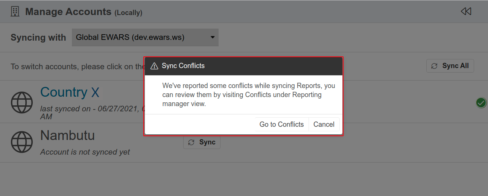
The conflict arises because User A is trying to submit an earlier version of Report 1 to the WHO EWARS server. WHO EWARS has an updated copy of the report, as a result of the synchronization performed by User B.
25.5.2 Resolving conflicts
Once the conflict is generated, it can be resolved as outlined below.
To view the conflict, click on Go to Conflicts, and the Report manager screen appears.
Click on
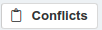
and the following screen appears:
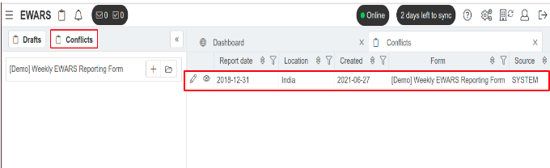
Graphical user interface, text, application Description automatically generated
The conflict is listed at the right-hand side, as shown above.
To resolve the conflict, click on the edit
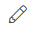
icon, and the following screen appears:
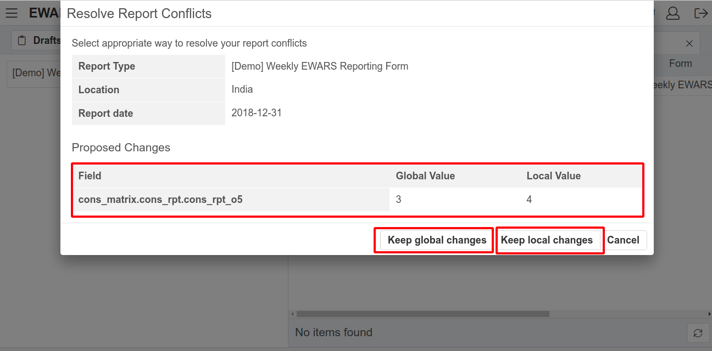
Graphical user interface, application Description automatically generated
As seen in the screenshot above, the difference between the field values present in the EWARS Stand-alone app report version and the WHO EWARS server report version is identified. You can choose to keep the local changes made in your EWARS Stand-alone app or to keep the global changes available in the WHO EWARS server.
Either click on
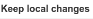
to keep the local changes made in your EWARS Stand-alone app
Or click on to keep the global changes.
A confirmation box appears, as shown below:
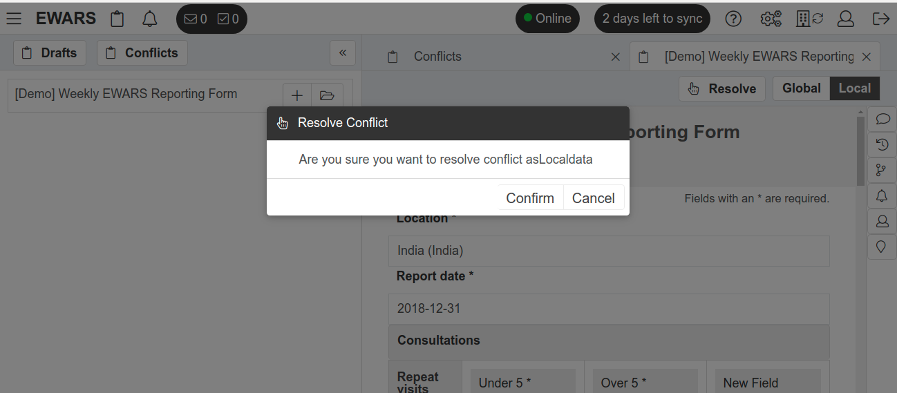
Graphical user interface, text, application Description automatically generated
Click on Confirm to resolve the conflict.
25.6 Identifying online/offline features through icons
You can identify the online and offline features in the menu through green and grey dot icons. Online features can be accessed only if you have an active internet connection. Offline features can be accessed even if you do not have internet access. All the features are available to users with reliable internet connectivity. EWARS Stand-alone users can only access offline features due to unreliable internet connectivity.
Features with a green dot can be accessed when you have an active data connection.
Features with a grey dot can only be accessed without an active data connection.
You can identify which features are available online or offline as follows.
Start the EWARS Stand-alone app by clicking on the EWARS icon on your desktop. Select Menu, and the screen below appears:
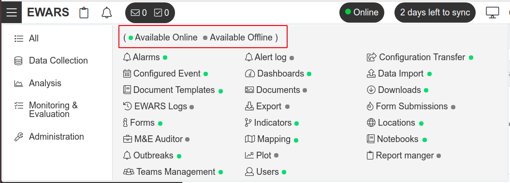
Note: if you try to access a feature that is only available online without an active data connection, you will see the following notification:
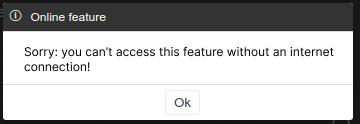
25.7 Viewing time left to sync the account
EWARS Stand-alone continuously displays the time (in days) left to sync at the top of your dashboard screen. If the account is not synced within the specified time frame, the account is locked and you are redirected to the sync screen.
To view the time left to sync your account, follow the steps below.
Start the EWARS Stand-alone app by clicking on the EWARS icon on your desktop, and the following screen appears:
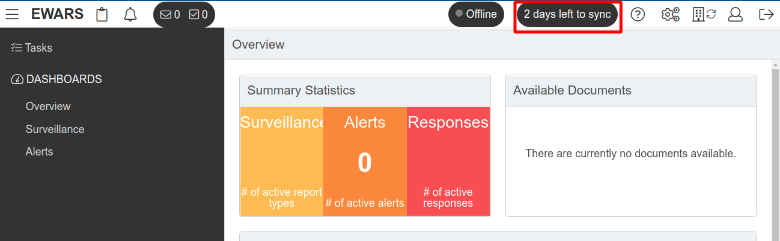
Graphical user interface, application Description automatically generated
At the top of the dashboard screen, you can view the days left to sync your account.
Once the expiry time is reached, the account is locked. You are redirected to the sync screen, and the following dialogue box appears:
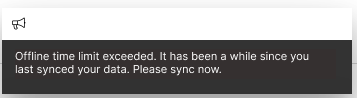
25.8 Unsyncing an account from the EWARS Stand-alone app
When you unsync an account, it does not delete the data from the WHO EWARS server but only removes it from the EWARS Stand-alone app installed on your local desktop or laptop. Thus, an EWARS Stand-alone account can be removed from a machine with confidence that the data it handled have also been removed locally, but are still available in WHO EWARS.
When a
n account is no longer in use, you should unsync it.
To unsync an EWARS Stand-alone account, follow the steps below.
Start the EWARS Stand-alone app by clicking on the EWARS icon on your desktop > click on the sync
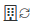
icon, and the screen below appears:
To unsync the Country X account, click on , and a confirmation box appears.
Click on Confirm, and the account and its data are deleted.
25.9 Troubleshooting the EWARS Stand-alone app
If you experience either of the following scenarios, you can troubleshoot your EWARS Stand-alone app using the options below.
Scenario 1. New changes made in the EWARS Stand-alone app are not visible to you.
Click on F5 – this reloads the app page.
If the problem persists, log out of your EWARS Stand-alone app and log in again.
If the problem still persists, click on Ctrl + F5 – this forces the app to reload the latest version.
If the problem continues to persist, you can try uninstalling the EWARS Stand-alone app and reinstalling it.
WARNING: If you uninstall the app, all your data (synced and unsynced) are deleted from your EWARS Stand-alone account. (Unsynced data include the data available only in your EWARS Stand-alone app, which are yet to be submitted to WHO EWARS).
For any other technical problems, contact the Account Administrator or write to ewars@who.int for EWARS support.
Scenario 2. The app freezes, or you are getting error messages while using it.
Click on Ctrl + F5 – this forces the app to reload the latest version.
For any other technical problems, contact the Account Administrator or EWARS support.
WARNING: If you click on Ctrl + Shift + Z, all your data (synced and unsynced) are deleted from your EWARS Stand-alone account. (Unsynced data include the data available only in your EWARS Stand-alone app, which are yet to be submitted to WHO EWARS).
 This a
This a Note: the following initial steps of installation need to be completed in an environment with an internet connection.
Note: the following initial steps of installation need to be completed in an environment with an internet connection. WARNING: If you uninstall the app, all your data (synced and unsynced) are deleted from your EWARS Stand-alone account. (Unsynced data include the data available only in your EWARS Stand-alone app, which are yet to be submitted to WHO EWARS).
WARNING: If you uninstall the app, all your data (synced and unsynced) are deleted from your EWARS Stand-alone account. (Unsynced data include the data available only in your EWARS Stand-alone app, which are yet to be submitted to WHO EWARS).